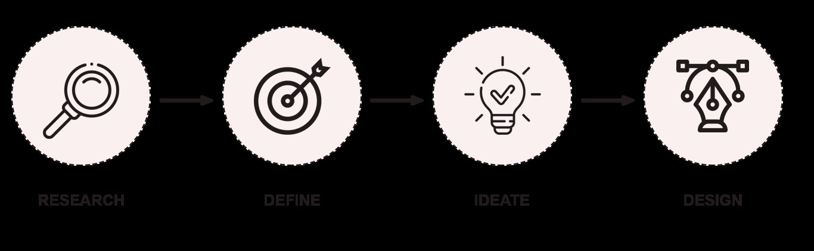
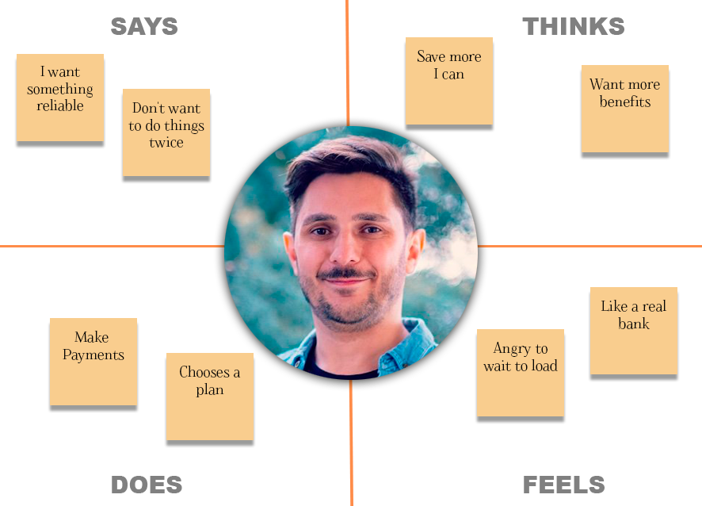
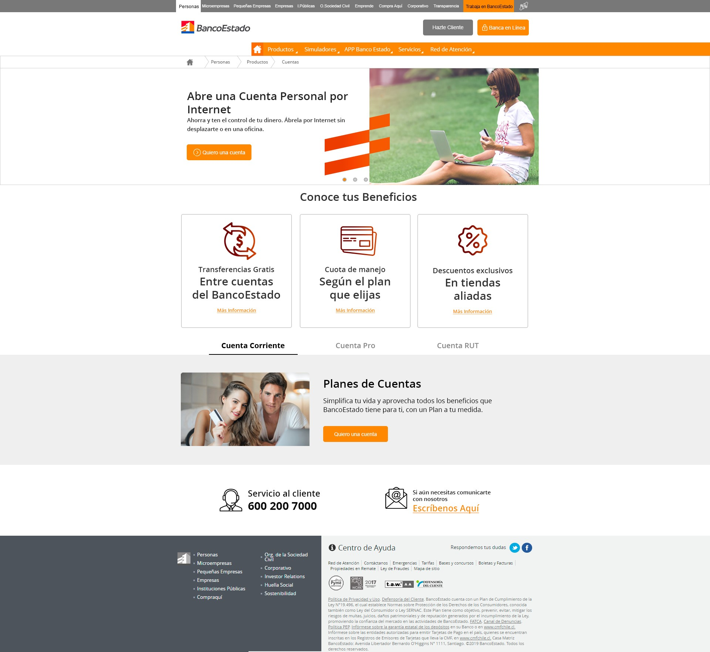
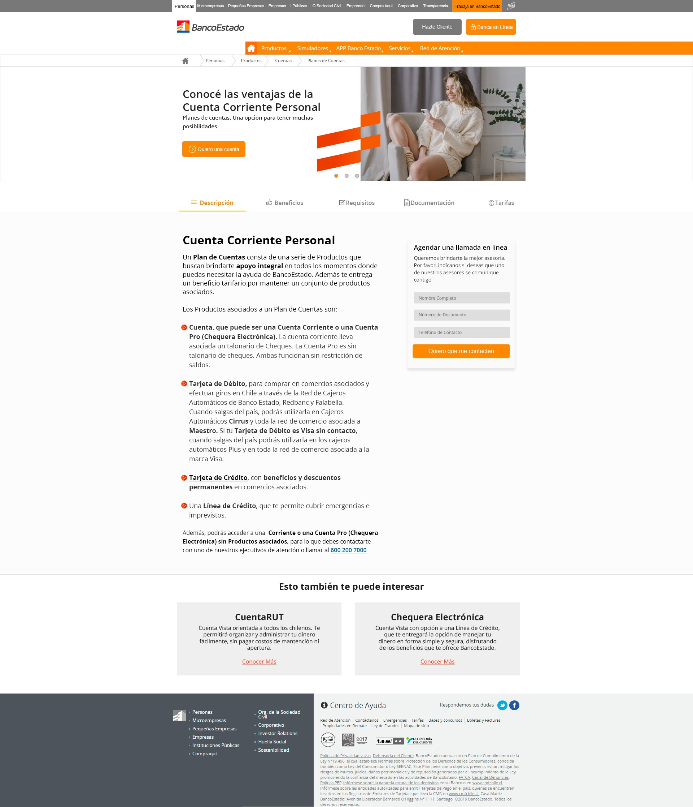

Banco Estado Chile | Home Page Redesign
“Banco Estado has set a goal to increase the request for accounts plans from its digital channels, so they contact MODYO for a website redesign and decide to start redesigning the landing page for account plans” Why specifically this landing page? Because they hypothesize that this landing page is not adequately communicating the information for the user to finally decide to order the products.
Our client has provided us two landing pages link that the think could be analyzed and give a solution to improve or increase the user leads. Then a small analysis of the pages
I had to explore on the Internet what where the options they use for banks and how they capture the attention of customers, after that I tried to design some sketches with possible environments, situation, and characters. Then I defined my design process to get a solve to the problematic.
I analyzed 3 different websites that can help us to know and understand the final product to users.
| Features | Bancolombia | Banco Chile | Bank of America |
|---|---|---|---|
| Difference between plans | |||
| Automation of processes and benefits | (Show offers) | ||
| Clear and visible information | |||
| Direct contact customer service | |||
| Extra information and attention hours |
After analyzing the possible options and resources that we have to offer a client, it was time to identify what the different needs of the consumer were
For this specific case, as it was impossible for me to directly access to the real public of the bank, we carried a small survey with close people trying to and understand what they need and motivate with their own banking experience.
A total of three interviews were conducted where participant had to share his personal experience with some questions.
Using the collective data from the targeted users, I create an user empathy map to understand and prioritize user needs.
It helped me a lot to get closer to what these people really think and feel about the service.
I decided to make the web pages more stable, simple and with more indications by being more functional than interactive. With easy navigation and an always-on tool to chat or schedule an appointment with an advisor.
For this process, use a small formula f the design thinking philosophy that allows us to have more empathy with the user using a key concept to be done. “How could we make the page more under stable to users to generate more leads on”
The idea of the so-called low-fidelity screen plan is a web page prototype, so before drawing up the layout, a kind of scheme is created. In this way, So I can understand how the final product requirements will be shown.
After designing the wireframe, it is much easier to know what elements must be required to be part of the design. gathering the information of the brand together with the skeleton that would be this wireframe is a matter of filling in the information with the elements always considering the space and the objective of communicating.
 The design kit with the key elements was only half observed identifying only some base guide colors, as well as the main source to be able to make these layouts, The usability test is the maximum test of the product, since here we receive information from our target user. So simulating a real case study, we would only have to analyze the result of a usability test with real users using an interactive prototype of the layouts, thus finding out which rules can be improved or which ones to discard. This was my presentation. I have done it with a lot of love and desire to develop an effective solution to the situation. Hope you enjoyed reading as I did it. Thanks so much.